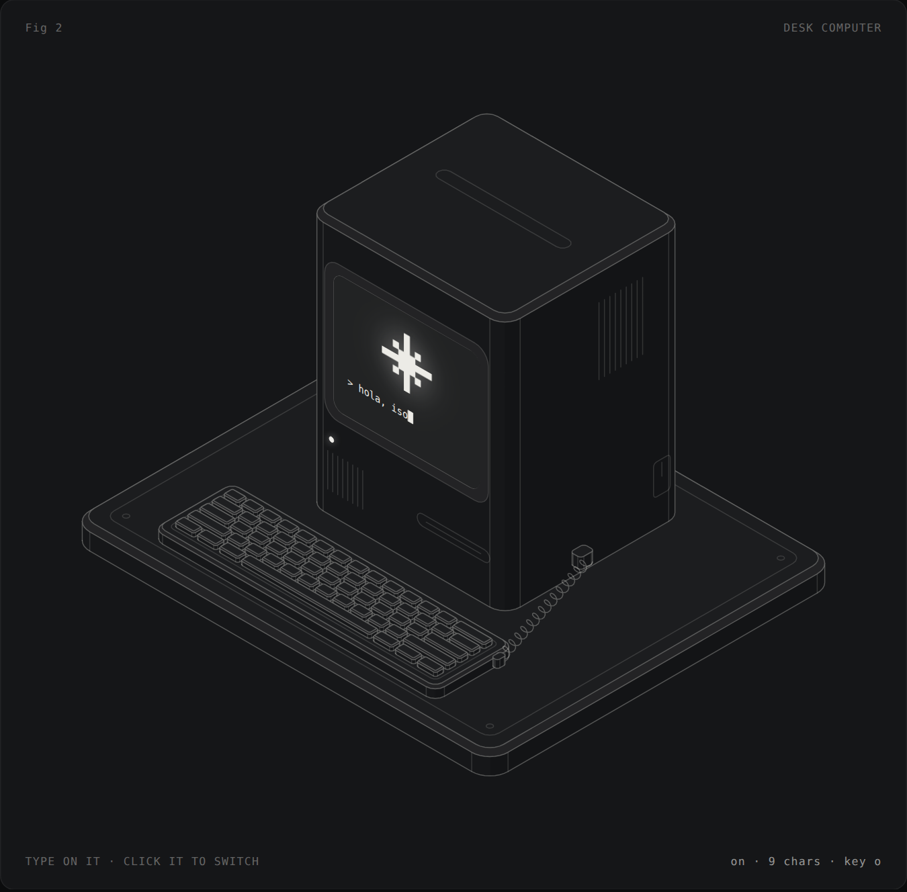
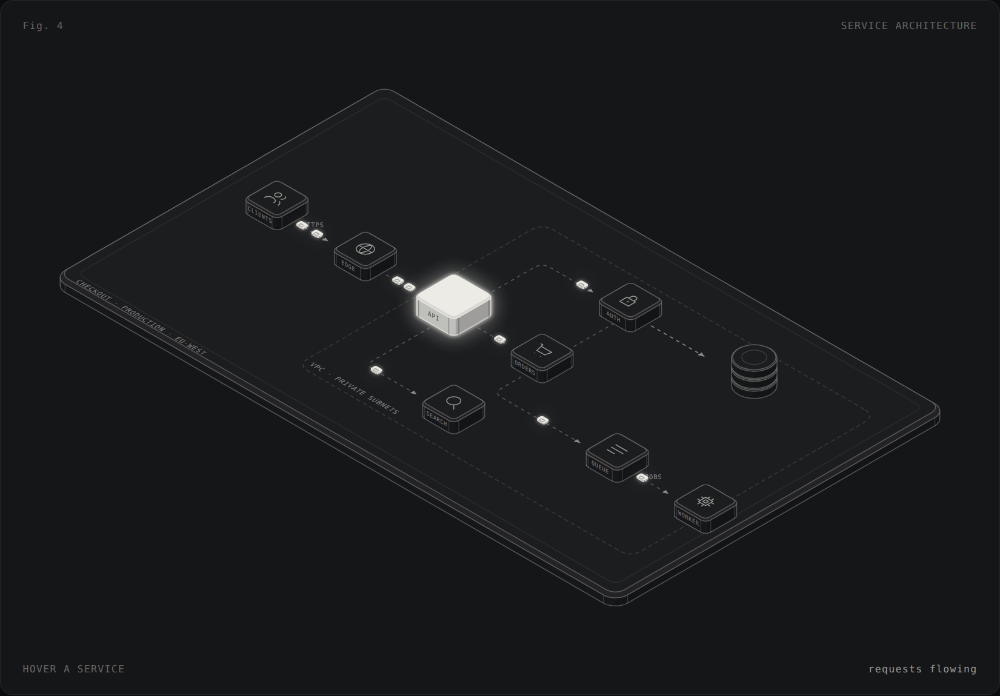
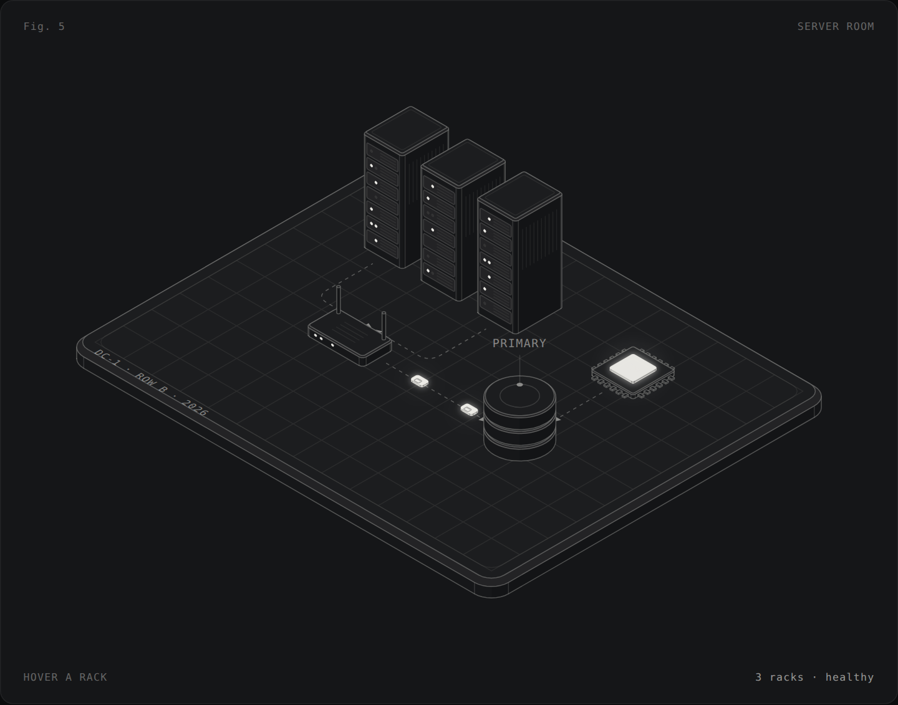
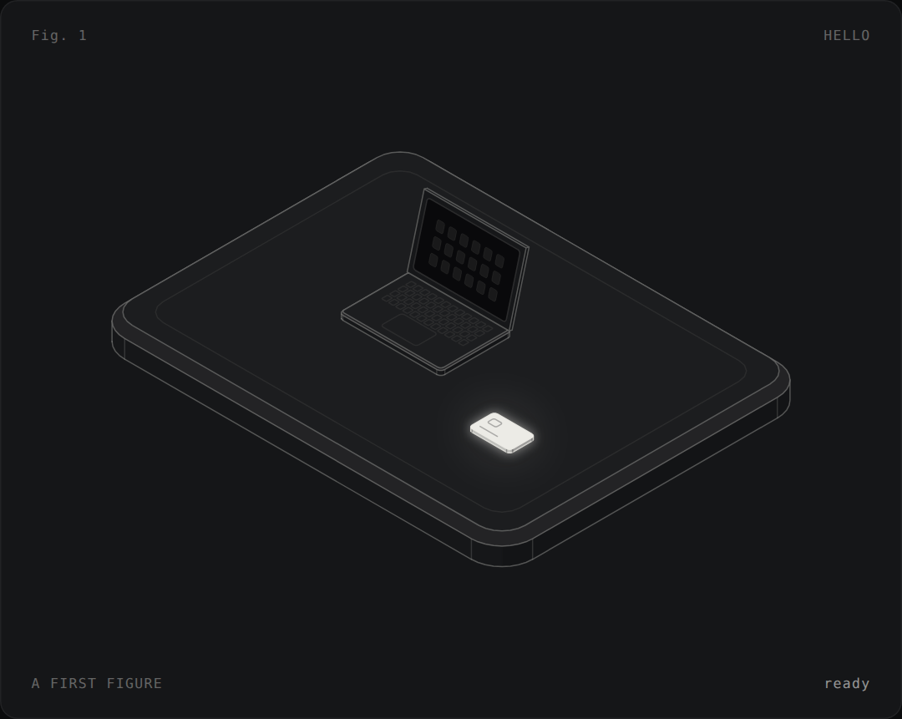
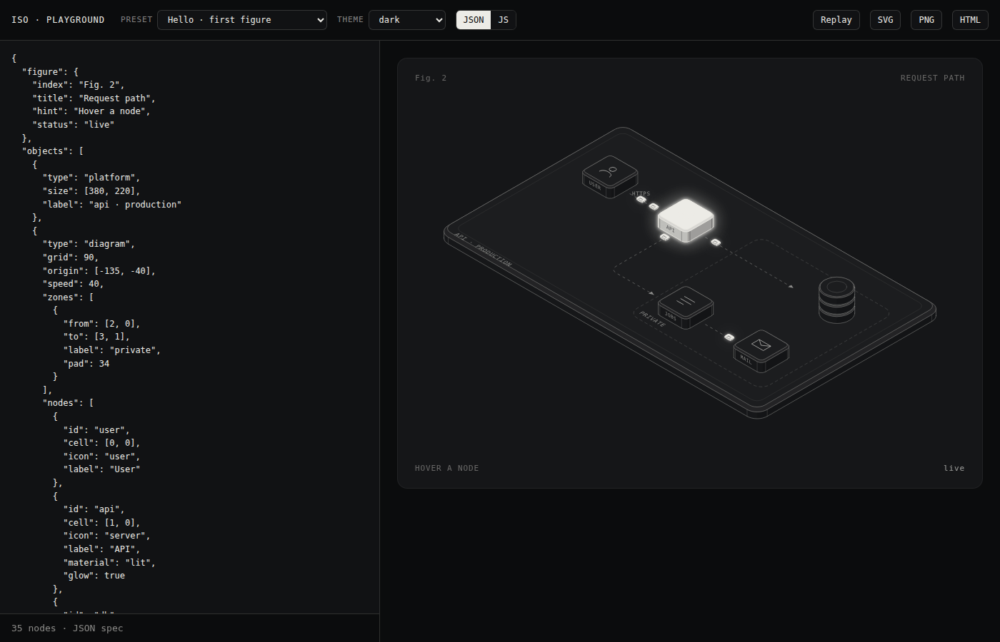

Iso · engine + skill · v0.1
An SVG engine for isometric figures, dioramas and diagrams — with depth sorting, a timeline, travelling objects, interaction and frame-exact export — and a skill that teaches any agent to use it well.
Every figure below is a single HTML file. Open one, read its source, change a number.

Fig 2 · object · interactive
Click to switch it on — a CRT line opens into the screen. Type on your keyboard.
Fig 3 · diorama · animated
1,400 objects assemble back to front; lit cards ride the roof and phones rise to meet them.

Fig 4 · diagram · data-driven
Nodes on a grid, routed edges, packets in flight. Hover a service.

Fig 5 · JSON spec
The whole figure is a JSON document rendered with Iso.render().

Fig 1 · template
The smallest useful figure: a platform, an object, one lit moment, one motion.

Tool
Edit JSON or JS, see it live, switch themes, export SVG, PNG or a self-contained page.
Place objects in world units, let the engine sort, frame and animate them.
<div id="app"></div>
<script src="dist/iso.js"></script>
<script>
const s = Iso.scene('#app', { figure: { index: 'Fig. 1', title: 'Hello' } });
s.platform({ size: [160, 120] });
s.laptop({ at: [-10, 0, 0] });
s.card({ id: 'card', at: [44, 24, 0] });
s.float('card', { amp: 4 });
s.assemble();
</script>No dependencies at runtime. 35 KB gzipped.